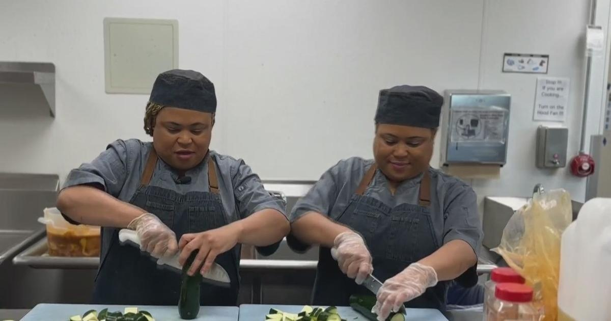

San Francisco twins from Netflix show "You Are What You Eat" talk about their journeyFor decades, nutritionists said people need to eat less meat, but doubts about plant-based diets persisted. Now, a show on Netflix involving San Francisco twins is putting to the test if a plant-based diet is better. Their entire lives, Pam and Wendy Drew have been DNA buddies, sharing clothes, their thoughts, even their profession. "You got a built-in best friend, and in our case you've got a built-in partnership," Wendy Drew said. But just when they thought their destinies were identical in every way, the San Francisco chef pair encountered a fork in the road, parting ways for a period of eight weeks, at least when it came to what's on their plates. In 2022, the owners of the San Francisco catering company Amawele's South African Kitchen were cast in a groundbreaking Netflix series released this month, "You Are What You Eat: a Twin Experiment." The show follows four sets of identical twins, where one is assigned an omnivorous diet while the other is asked to only consume plant-based food. "I think the only thing we heard was Netflix," Wendy Drew said. "We're like, 'I don't care what I'm doing, it's Netflix, we're doing it,'" she laughed. While Wendy Drew was given meats, grains and veggies, Her sister had to become a vegan. "Pam had a few meltdowns, and I would have to coach her," Wendy Drew said. In two short months, the results were anything but identical. Christopher Gardner, the Stanford researcher who conducted the study, said those who were given the vegan diet, had lower bad cholesterol, higher healthy gut bacteria, and less inflammation and lost more weight. Most importantly within eight weeks the vegan twins were able to turn back their biological clock. "I didn't think it would be as drastic or strong as we found," he said. "It means people should try and having less meat and more plants in their diet. If they want to go all the way vegan that's fine, but they don't actually need to, just making a shift would help." That's exactly what Pam and Wendy Drew have done since. While they still cook plenty of meat for their customers, they personally eat about half the amount they used to. "I'll make myself a nice vegetable curry and a side of like cauliflower rice because we do try to eat less processed grains," Pam said. But that's not all that's changed. The show kickstarted their business; they've recently come out with a new rooibos-based alcohol called Red Pearl Spirits. They said they're also getting used to being local celebrities. Now, they're doubling down on healthier food while having twice the fun. "We were down at the Embarcadero, and we're about to turn to Mission Street and a lady was walking across the street and she just looks at us and she starts waving, (and saying], 'Oh my God! Oh my God.'" for more features. |
 |